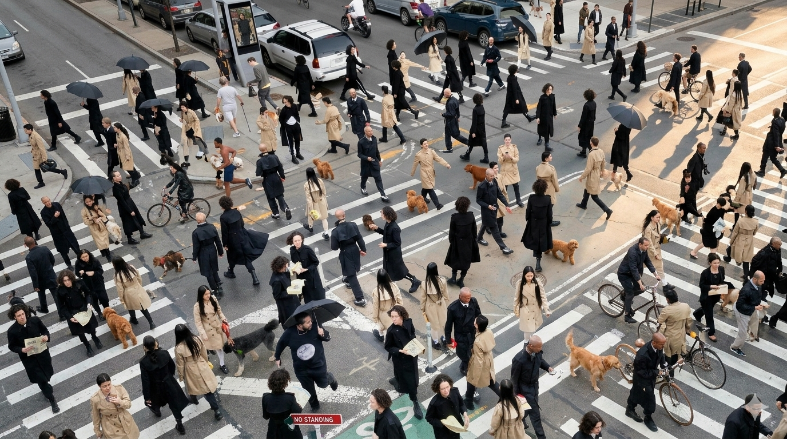

SPAIN | EST.2025

SPAIN | EST.2025
EXPERIENCIA ATELIER A MEDIDA

No somos una marca de colección genérica. Somos el punto de encuentro entre la artesanía del diseño, la precisión de la tecnología y la honestidad de entender al cuerpo real.
01
Diseño con intención
Cada pieza de WAENN parte de una pregunta: ¿por qué existe esta prenda? No diseñamos por volumen. Diseñamos para que cada pieza tenga una razón de estar en tu armario y seguir ahí.
02
Tecnología aplicada al fit
Usamos tecnología no como marketing, sino como herramienta real. Para entender cómo se mueve un cuerpo, cómo cae una tela y cómo se siente una prenda cuando te la pones de verdad.
03
Identidad, no tendencia
En WAENN no seguimos temporadas. Construimos piezas que hablan del carácter de quien las lleva. La moda como expresión de quién eres, no de lo que está en el feed esta semana.
La primera colección de WAENN está a punto de ser presentada. Déjanos tus datos y serás el/la primerx en conocerla, con acceso exclusivo antes del lanzamiento público.
VISIÓN
WAENN empieza con una colección. Pero la visión es más amplia. Estamos construyendo un espacio donde el diseño desde 0, la tecnología de medidas y la experiencia atelier se integran en una sola propuesta.
Un lugar donde tu cuerpo no tiene que adaptarse a la prenda. La prenda se adapta a ti.
PERMANENCIA
Creamos prendas pensadas para durar. No en tendencia, sino en valor. Piezas que siguen siendo tuyas con el tiempo porque se construyeron bien desde el principio.
IDENTIDAD
Vestir es un acto de comunicación. Cada elección dice algo. En WAENN queremos que lo que digas sea exactamente lo que quieres decir.
FIT REAL
El fit no es un detalle técnico. Es la diferencia entre una prenda que usas y una que olvidas. Diseñamos para cómo se siente el cuerpo.
INNOVACIÓN ÚTIL
La tecnología en WAENN no es decorativa. Es funcional. La usamos para entender y ajustar con más precisión y crear una experiencia de moda única.
 WAENN — SS25
WAENN — SS25


ORIGEN
La moda actual ofrece demasiado y dice muy poco. Colecciones que se olvidan en semanas. Tallas que no tienen en cuenta cómo se siente una persona en su propio cuerpo.
WAENN nació de esa incomodidad. De la convicción de que diseñar bien implica escuchar, entender y construir algo que tenga sentido para quien lo viste, no solo para quien lo vende.